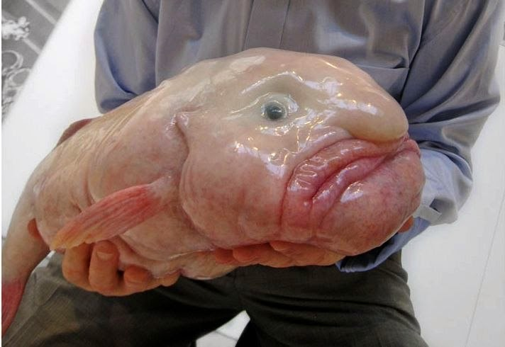
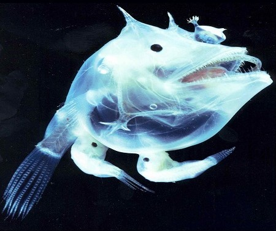

Fauna abisal y animales
Más del 70% de la superficie del planeta Tierra está cubierta de agua. Este impresionante dato es suficiente para despertarnos todo tipo de incógnitas y cuestionarnos acerca de cuánto sabemos realmente sobre la vida en los océanos. Especialmente si nos detenemos a pensar en la enorme cantidad de especies que allí habitan y de las que aún no tenemos conocimiento. ¿Quién sabe desde que tiempos y a qué profundidades exista la vida los abismos de los océanos? Son muchas las interrogantes y jamás podríamos contestarlas en un simple artículo, no obstante, lo que sí haremos hoy es presentarte algunas especies muy raras que sabemos que habitan nuestras aguas. Éstos son algunos de los animales acuáticos más extraños del planeta.
Fauna abisal
La fauna abisal o fauna abisopelágica hace referencia a todas aquellas especies marinas que habitan en las más grandes profundidades de los mares y océanos. La zona abisopelágica o abisal es uno de los niveles en los que está dividido el océano según su profundidad, está situada por debajo de la zona batipelágica y por encima de la hadopelágica y corresponde al espacio oceánico entre 4000 y 6000 metros de profundidad.1? La zona abisal es una región afótica, lo que significa que ninguna luz penetra en esta parte de los océanos y mares; estas constituyen alrededor del 75% del espacio oceánico habitable. Sin embargo, algunas características de estos organismos de aguas profundas como la bioluminiscencia son visibles en la zona mesopelágica (aguas marinas situadas entre 200 y 1000 metros de profundidad). La mesopelágica es una región disfótica, es decir, aquella parte del océano donde la luz es escasa o mínima.Son ciertas especies que nadan libremente, viven y se alimentan en aguas abiertas a dichas profundidades y muy raramente se aproximan a la superficie La zona abisal es una región afótica, lo que significa que ninguna luz penetra en esta parte de los océanos y mares estas constituyen alrededor del 75% del espacio oceánico habitable.? Sin embargo, algunas características de estos organismos de aguas profundas como la bioluminiscencia son visibles en la zona mesopelágica (aguas marinas situadas entre 200 y 1000 metros de profundidad). La mesopelágica es una región disfótica, es decir, aquella parte del océano donde la luz es escasa o mínima.? Son ciertas especies que nadan libremente, viven y se alimentan en aguas abiertas a dichas profundidades y muy raramente se aproximan a la superficie.
CARACTERISTCAS
TIPOS DE ESPECIES
| Especie | Nombre Cientifico | Caracteristicas | Imagen | video |
|---|---|---|---|---|
| El pez gota | Psychrolutes marcidus |
|
 | fgdhjj |
| Pejesapo espinoso | Caulophryne jordani |
|
| |
| Pez víbora | Chauliodus sloani |
|

| |
| Pez dragón | Stomias boa |
|

| |
| Cerato abisal blanco | Haplophryne mollis |
|
 |